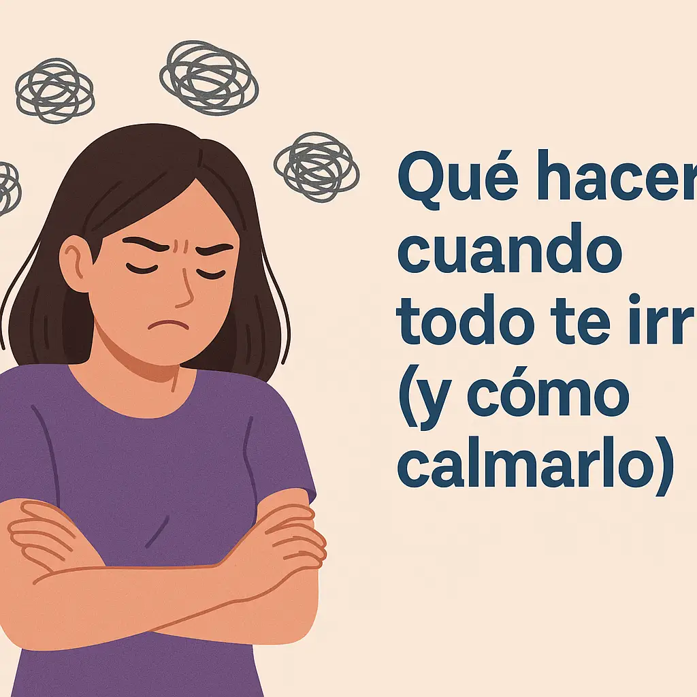
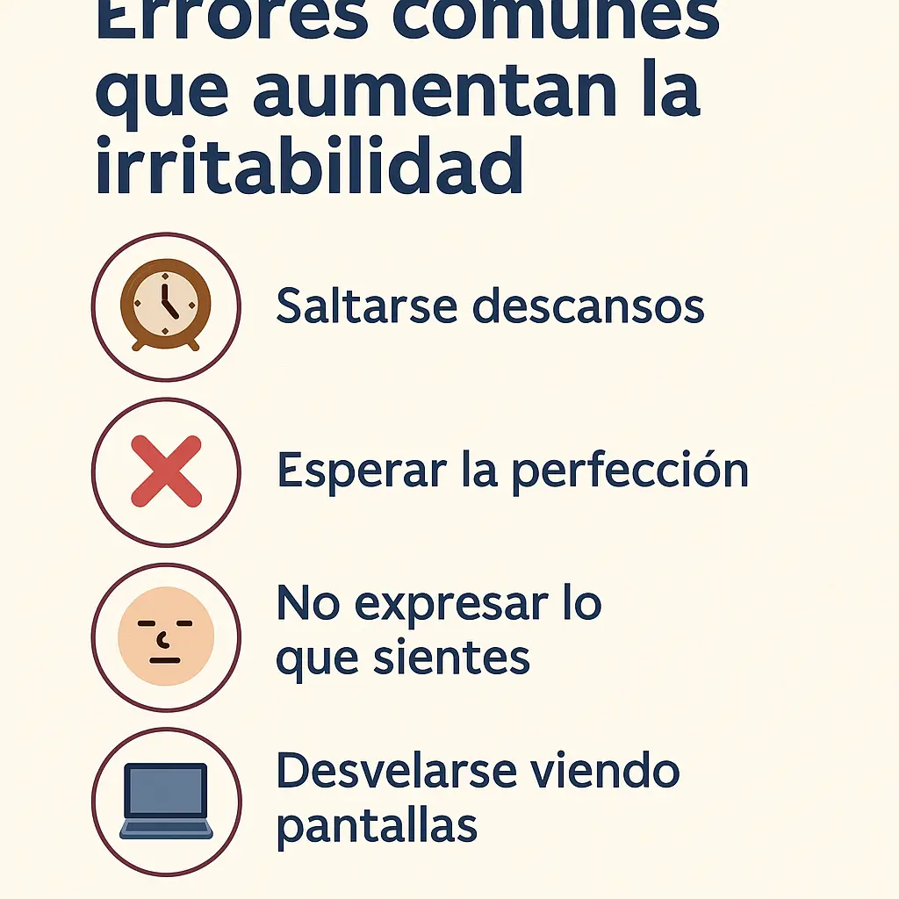

Qué hacer cuando todo te irrita (y cómo calmarlo)
¿Te pasa que cualquier cosa te irrita? Ruidos, comentarios, tareas pequeñas... Si sientes que tu paciencia desaparece con facilidad, no estás solo/a. La irritabilidad mental es una respuesta común al estrés acumulado, falta de descanso, sobrecarga emocional o incluso desequilibrios hormonales.
¿Qué es la irritabilidad mental y por qué aparece?
La irritabilidad mental no es solo “mal humor”. Es un estado de saturación emocional donde cualquier estímulo puede ser el detonante. Puede surgir por:
- Fatiga prolongada o falta de sueño
- Altos niveles de ansiedad o estrés
- Alimentación desbalanceada o bajones de azúcar
- Desequilibrio hormonal (especialmente en días premenstruales)
- Consumo excesivo de pantallas o ruido ambiental
¿Cómo calmar la irritabilidad mental?
Existen estrategias muy simples que puedes aplicar en el momento en que lo sientas. Aquí van algunas:
1. Haz una pausa de 3 minutos
Cierra los ojos, respira profundo y enfócate en tu respiración. Este pequeño descanso puede ayudarte a interrumpir el patrón de irritación.
2. Haz el ejercicio de los 5 sentidos
Observa 5 cosas que veas, 4 que puedas tocar, 3 que escuches, 2 que huelas y 1 que saborees. Es ideal para “bajar” del pensamiento acelerado al presente.
Descubre cómo hacer este método paso a paso
3. Identifica el detonante invisible
A veces la irritación no es por lo que sucede, sino por algo no resuelto (una preocupación, hambre, cansancio…). Hazte estas preguntas:
- ¿Dormí bien anoche?
- ¿Estoy con hambre o sed?
- ¿He tenido tiempo para mí hoy?
4. Cuida tu sistema nervioso
Evita cafeína, alcohol y pantallas cuando estás irritable. En su lugar, haz algo que regule tu energía: salir a caminar, ducharte, escribir o incluso estirarte.
Más técnicas prácticas para regular tu mente
¿Y si la irritabilidad es muy frecuente?
En ese caso es probable que necesites hacer pequeños cambios de rutina. Aquí algunas ideas:
- Establece horarios de desconexión digital
- No te sobrecargues de compromisos
- Agrega pequeños momentos de placer diario
- Haz check-in emocional: cómo te sientes cada día
¿La alimentación influye en la irritabilidad?
Sí. Bajones de azúcar o falta de ciertos nutrientes (como magnesio o vitamina B6) pueden hacerte más sensible a cualquier estímulo. Intenta incorporar:
- Almendras, plátano, avena, legumbres
- Infusiones como manzanilla o valeriana
- Beber agua con regularidad
¿Qué no hacer cuando estás irritable?
Evita tomar decisiones importantes o hablar en momentos de alta tensión. Tampoco reprimas todo: busca una forma segura de soltar (escribir, hablar, caminar). Y no te culpes por sentirlo: es parte de tu cuerpo pidiendo descanso.
Otras lecturas que pueden ayudarte
- Cómo dejar de sobrepensar antes de dormir
- Cómo calmar la mente en 60 segundos
- 5 micro-hábitos para sentirte mejor cada día
- Journal para la ansiedad: empieza hoy
Descubre el origen y una solución práctica. Aplica una de estas técnicas hoy y nota cómo tu día mejora.